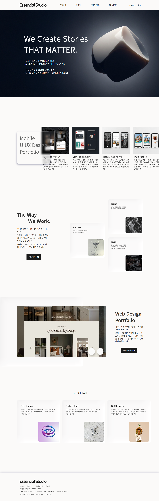
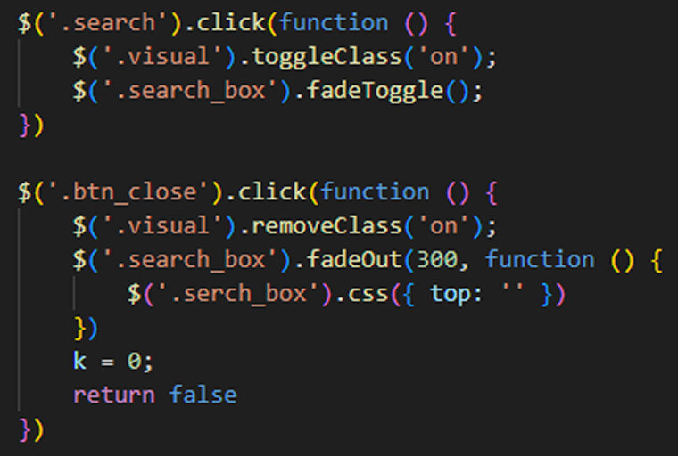
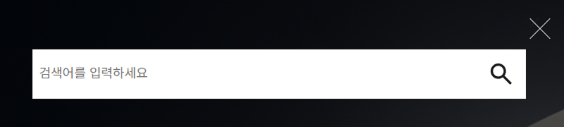
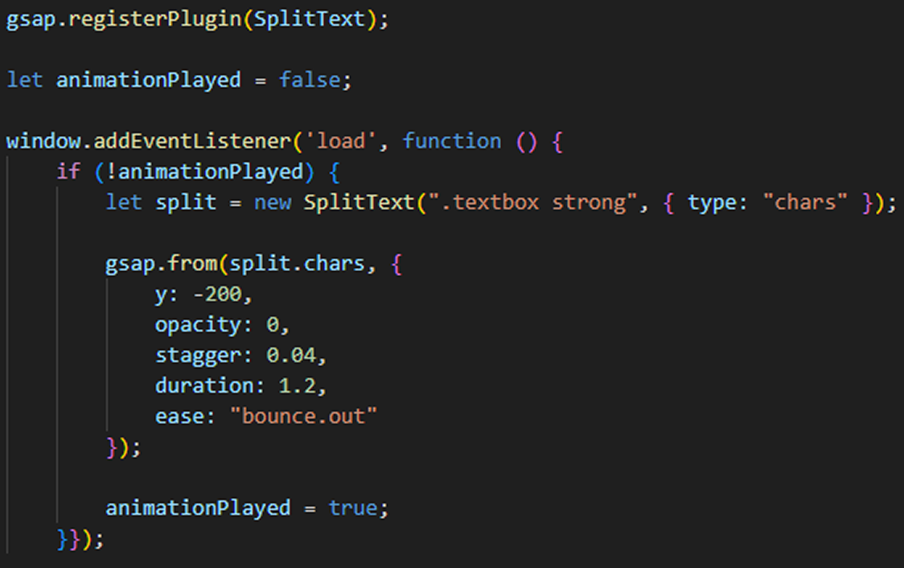
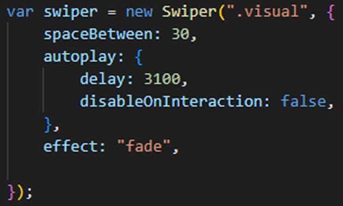
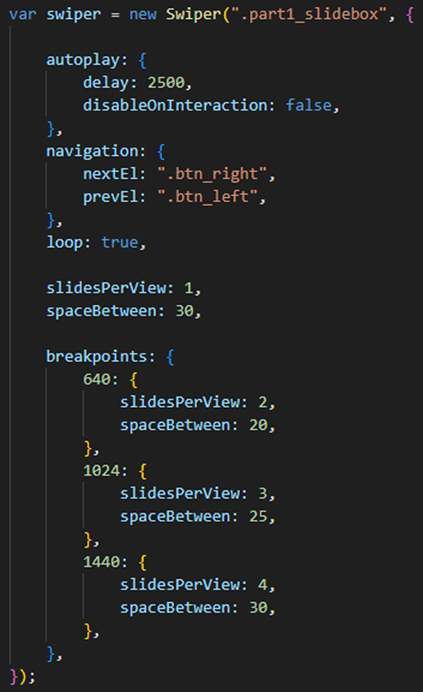
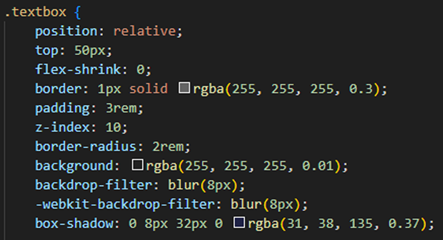

크리에이티브 디자인 에이전시 브랜드 사이트

프로젝트의 일관성을 위한 디자인 시스템
Warm White - 배경 및 글래스 효과
Medium Gray - 텍스트 및 요소
Dark Gray - 다크 배경
본문 텍스트 - 가독성과 모던한 느낌
로고 텍스트 - 세련되고 독특한 느낌
주요 디자인 결정과 그 이유
작업물이 돋보이도록 배경을 무채색으로 하되, 글래스모피즘 효과로 깊이감과 현대적인 느낌을 동시에 구현했습니다. 반투명 레이어가 콘텐츠 간 자연스러운 레이어링을 만들어냅니다.
포트폴리오 이미지가 더욱 선명하게 보이도록 다크 톤을 선택했습니다. 어두운 배경은 밝은 색상의 작업물을 더욱 돋보이게 합니다.
슬로건을 char 단위로 분리해 위에서 bounce.out ease로 떨어지는 효과를 구현했습니다. 에이전시 사이트의 첫인상에 임팩트를 주기 위한 선택입니다. 페이지 로드 시 한 번만 실행되도록 animationPlayed 플래그로 중복 실행을 방지했습니다.
Swiper의 Infinity Loop로 작업물을 끊임없이 순환 표시하고, breakpoints로 화면 크기에 따라 슬라이드 노출 개수가 자동으로 조정되도록 했습니다.
검색 클릭 시 toggleClass로 비주얼에 클래스를 추가해 배경을 어둡게 처리하고, fadeToggle로 검색창을 표시/숨김 처리했습니다. 닫기 버튼에는 fadeOut(300)을 적용해 자연스럽게 사라지도록 구현했습니다.


GSAP SplitText로 슬로건을 char 단위로 분리해 위에서 떨어지는 효과를 구현했습니다. Swiper Infinity Loop로 비주얼 이미지가 자동 순환되며 불빛이 on/off 되는 듯한 효과를 연출했습니다.


Swiper Infinity Loop로 작업물이 무한 슬라이드되도록 구현했습니다. 좌측 텍스트박스에 글래스모피즘 요소(backdrop-filter, rgba)를 적용하고, breakpoints로 화면 크기에 따라 슬라이드 노출 개수가 자동으로 조정되도록 했습니다.


글래스모피즘 요소를 기반으로 디자인하고, tel: 링크로 고객상담 대표번호에 바로 연결되도록 구현했습니다.